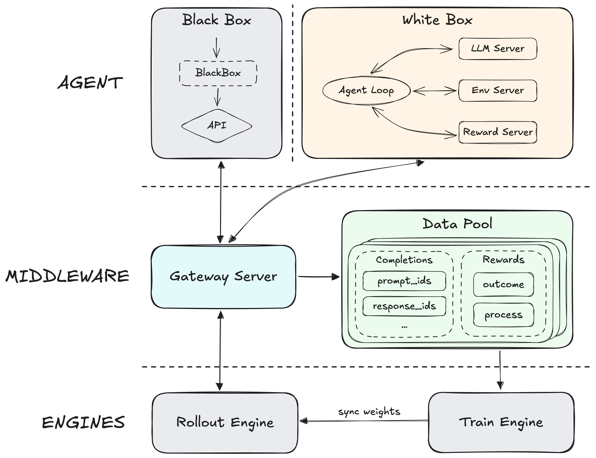
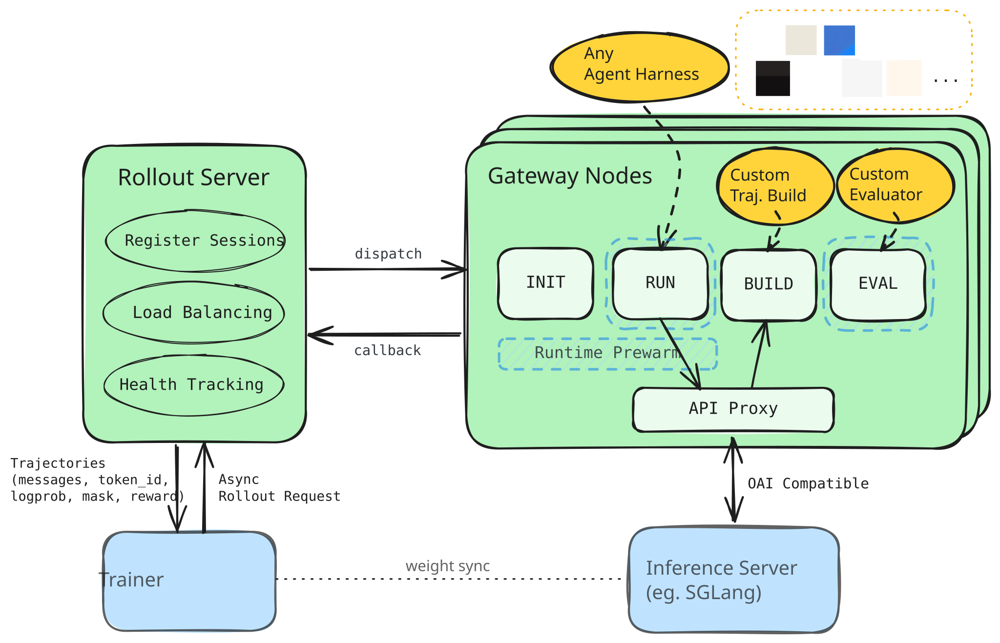

Policy samples an action
The model produces assistant text or a tool call from the current prompt.
AGENTIC RL
Token-In / Token-Out resolves the correctness boundary for long-horizon agent RL.
Presented by Chengxi LiFireworks Training Infrastructure
Readable text is a view.
Sampled tokens are evidence.
0 · AGENTIC RL IN POST-TRAINING
The model produces assistant text or a tool call from the current prompt.
The agent harness executes tools and returns observations from the real task.
Each next action conditions on the interaction accumulated so far.
Within each prompt group, better rollouts become more likely.
−∑i ∑t Âi log pθ(ai,t | prefixi,t)
Sample a group of rollouts for one prompt. Their relative rewards form Âi; it weights each sampled action token’s log-probability. Prompt and tool-observation tokens are masked.
1 · REAL AGENT HARNESSES
OpenCode and Pi drive their agent loops from Chat Completions responses—not from raw token IDs.
token_ids [151644, 894, 198, …]
logprobs [-0.02, -0.14, -0.01, …]
These are the policy actions and aligned probabilities used for training.
assistant.content
assistant.tool_calls[]
finish_reason
OpenCode or Pi displays text, dispatches tools, appends results, and issues the next request.
Decode/parse is required for agent compatibility. Exact tokens—not the parsed message—remain the training checkpoint.
2 · FAILURE 1/3 · HISTORICAL REPLAY
Qwen3.5-397B-A17B provides an existence proof: this valid sequence decodes to “The agent called the tool successfully,” but a later full-history render can encode that same text as a different action.
QWEN3.5 TOKENIZER · VALID POLICY SEQUENCE
The two tokens decode to “ successfully” inside the sentence.
SAME TEXT · RE-ENCODED
The sentence is unchanged; the action length and aligned logprobs change.
Per-turn capture is mandatory
Retain the exact prompt IDs, sampled IDs, and aligned rollout logprobs at inference. A message-only replay cannot recover this evidence later.
Best-effort repair—not a guarantee
Reuse the accepted exact prefix, or replace a bounded mismatch inside the latest replayed response as mask-0. If neither is safe, diverge.
3 · FAILURE 2/3 · FORMAT + JUNCTION
A harness can rewrite message bytes; a tokenizer and chat template can change the exact turn junction. Neither requires a semantic change.
{ "command" : "printf synthetic-harness-turn" }
{"command":"printf synthetic-harness-turn"}
In synthetic turns through pinned OpenCode and Pi CLIs, both replayed the compact form. The tool input stayed equivalent; the bytes did not.
<|im_end|> + <|im_start|>tool
<|im_end|>\n<|im_start|>tool
The renderer must implement the model’s tokenizer and chat-template contract. Blind concatenation can miss a required newline or overlap.
Repair by owner: normalize only proven harness equivalences, and apply only certified model-format edits. If either mapping is unsupported or ambiguous, diverge or reject.
4 · FAILURE 3/3 · HISTORY CHANGE
Sometimes the harness intentionally changes what the model will see next. This is not tokenization noise and must not be normalized away.
user task → assistant tool call → tool result → assistant action
system summary: “Inspected the repo; tests fail in auth.”
No bounded token edit can make the summary equal the earlier history without claiming a prompt the model never saw.
Continue from the complete new prompt; keep prior exact evidence separately.This is a real divergence. Splitting records the change; it does not repair or hide it.
5 · TWO TITO MODES
Both capture exact tokens for every inference call. Full-history TITO verifies the prompt the harness used; incremental TITO constructs the next prompt online.
PN = full_render(MN)
The harness chooses the prompt used for inference. With exact per-call token IDs and logprobs, continuity can be checked after the rollout.
Check / fallback
Full-render the messages, compare with the prior exact record, and try bounded realignment. If alignment is unsafe, split.
PN = join(CN−1, render_suffix(ΔMN))
The sidecar reuses the previous exact checkpoint and renders only new messages. It can change the prompt from the harness's full replay.
Check / fallback
Certify the model-specific suffix and token junction. If the join is unsupported or history changed, split before sampling or reject.
Full history is broader and offline-capable. Incremental can avoid replay-only divergence, but every model/template junction needs explicit verification.
6 · SAFE DIVERGENCE
If continuity breaks entering turn N, keep every trainable action beside the exact prompt from which the rollout model sampled it.
PK … observations+AK … AN−1
Prompt and observation tokens are mask-0. Every retained sampled assistant action is mask-1 and receives the rollout advantage.
Close the segment at the last exact action.PN · mask-0+AN · mask-1
PN is the complete prompt used to sample AN. Replayed earlier messages inside it are context, while AN and later exact actions still train.
CN−1is not a prefix ofPN→close + restart at PNFull history splits the record after inference. Incremental chooses a full-rendered fallback or rejects before the next sample.
7 · REALIGN OR SPLIT
slime keeps one packed sample when drift begins inside the latest response and passes a bounded gate. Other mismatches start a new exact sample.
A′N−1 · mask-0+AN · mask-1
The exact replay inside PN replaces the latest stored response. Masking removes policy-gradient attribution from tokens whose rollout logprobs no longer match.
PN · mask-0+AN · mask-1
The prior sample closes with its actions still trainable. Turn N starts from the complete exact prompt used by inference, so replayed history becomes context again.
Cost: repeated history lowers the trainable-token ratio.slime default: len(AN) < 1,024Its realign gate uses the incoming output length, not the number of masked tokens.The threshold chooses between two coverage costs. Certified incremental continuation can avoid both for replay-only drift and has the highest theoretical trainable-token ratio; genuine history changes still split.
8 · WHY BLACK-BOX AGENT RL
We first saw the black-box agent-RL pattern in MiniMax Forge; slime, NVIDIA ProRL / Polar, and Miles followed with open-source implementations.
White-box · framework-owned loop
The RL stack owns message state, environment steps, tools, reward hooks, and rendering. OpenCode, Pi, or a customer loop must be rewritten or wrapped to implement those interfaces.
Black-box · standardized model endpoint
The customer keeps its own loop, tools, sandbox, context management, compaction, and subagents.
Model calls route through the gateway, which captures exact prompt/output IDs and rollout logprobs for training.
Tool-call JSON, reasoning fields, template versions, and history rewrites can still break token lineage. Match, certify, or split.
Black-box supports arbitrary harness implementations; it does not make arbitrary harness behavior token-aligned by default.
9 · REFERENCE ARCHITECTURES

Agent traffic enters a shared pool; completions retain prompt_ids / response_ids for training.

The rollout server schedules sessions; gateway nodes execute agents, build trajectories, evaluate, and proxy inference.
Source: NVIDIA Polar / ProRL Agent Server · Apache-2.010 · FIREWORKS
OpenCode and Pi keep using OpenAI Chat Completions. The same environment-local sidecar supports replay-preserving and checkpoint-authoritative TITO.
Start the local sidecar and trajectory. Receive /v1/chat/completions from an unmodified harness.
Separate policy calls from title, summary, or compaction calls so only policy actions enter the trajectory.
full_history preserves the harness prompt and checks continuity. incremental joins the exact checkpoint with a certified suffix.
Send prompt IDs to the sampler; atomically retain completion IDs, logprobs, response evidence, and metrics.
Build training samples from exact IDs and masks without decoding and re-tokenizing the policy action.
11 · STICKY ROUTING
One trajectory gets one opaque affinity key. Its policy turns reuse it; sibling rollouts and retries get fresh keys.
Bind once.
The sidecar—not the agent harness—creates the key.
Reuse every turn.
The sampler receives the same typed prompt-cache key.
Isolate siblings + retries.
Every rollout member and retry gets a distinct trajectory and affinity key.
12 · WHERE THE GATEWAY RUNS
slime, Miles, and ProRL/Polar keep the gateway outside each sandbox—but share it at different scopes.
A singleton adapter serves many session IDs. E2B sandboxes call its routable host and port.
1 per rollout processThe rollout side picks one server from a pool for each session. Each server hosts many sessions and proxies to inference.
N per pool · many sessions eachA central rollout server schedules sessions. Each gateway node hosts the proxy, runs sandboxes, builds trajectories, and evaluates.
1 per worker nodeNone of the three reviewed implementations puts one gateway inside every sandbox or container.
13 · REFERENCE ARCHITECTURES
Agent traffic enters a shared pool; completions retain prompt_ids / response_ids for training.
The rollout server schedules sessions; gateway nodes execute agents, build trajectories, evaluate, and proxy inference.
Source: NVIDIA Polar / ProRL Agent Server · Apache-2.014 · FIREWORKS PLACEMENT DECISION
Training and inference are independent HTTP services, so exact-token interpretation can stay with the harness instead of becoming a shared middleware tier.
The harness and sidecar start together. No public callback URL, host bridge, or fixed port is required to reach TITO.
Localhost inside every sandboxThe sidecar carries the certified renderer, tokenizer, and exact-token ledger. GPU inference remains remote.
Measure startup + memoryRollouts already call inference over HTTP; optimization already calls the trainer over HTTP. The sidecar only preserves local protocol and token state.
Reuse the native service splitTrust + durability trade-off: each sandbox receives the renderer, tokenizer, sidecar code, and a scoped inference credential—and must publish its trajectory before teardown. Server-owned retries start a fresh attempt.
15 · NATIVE SERVICE BOUNDARY
Fireworks takes the rollout-function boundary from slime, then keeps inference and training as independent HTTP services.
rollout_fn(sample_prompt)Hides the harness, sandbox, tools, grader, and retry policy. Returns one logical RolloutRun.
/inference/v1/completions
RolloutRun → optimizationThe SDK owns fanout, grouping, advantages, optimizer steps, and weight publication.
Independent job-scoped service
No separate shared gateway tier is required: the sandbox sidecar preserves protocol and token evidence, while existing services own remote sampling, optimization, lifecycle, and weight publication.
16 · RECAP
Train on actions, not reconstructions.
The transcript is for people; token IDs and aligned logprobs are the policy evidence.
Choose who owns the next prompt.
Full history preserves harness inference; incremental uses the exact checkpoint plus a certified suffix.
Spend training coverage explicitly.
Realign masks the prior action; split repeats the exact prompt as context. Certified incremental continuation can avoid both for replay-only drift.
References
MiniMax Forge · slime coding-agent RL · NVIDIA ProRL Agent / Polar · Miles session proxy